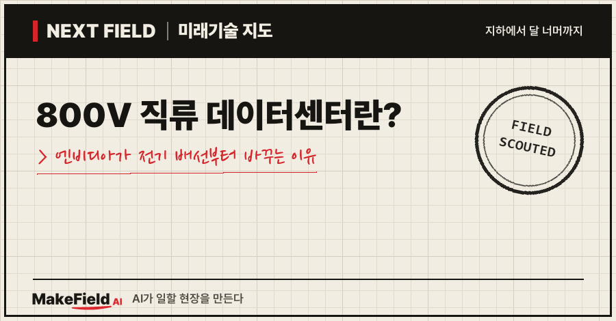
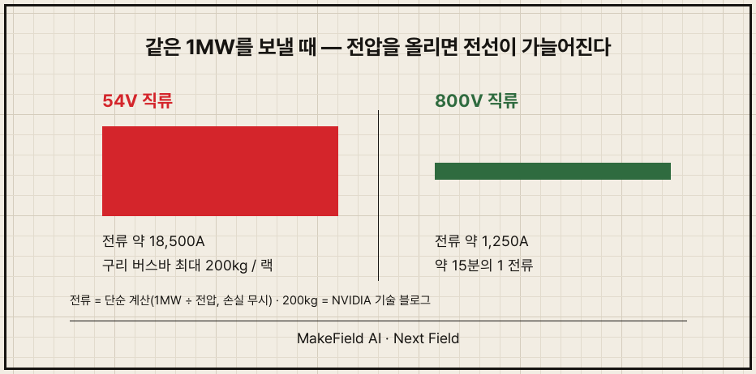
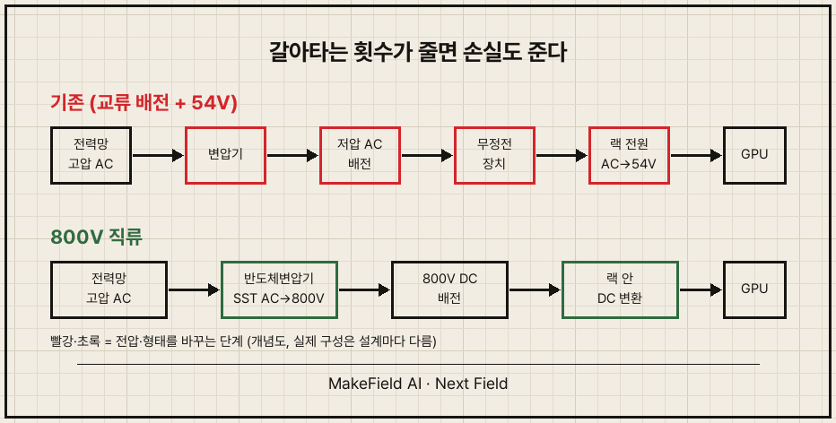
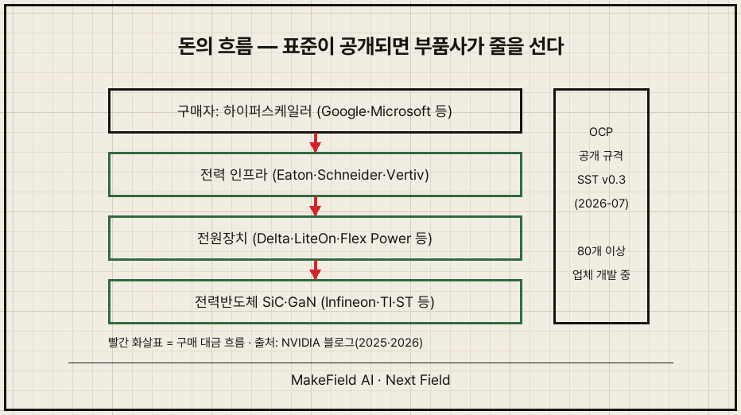

한 줄 요약: 800V 직류 데이터센터는 AI 서버 선반 한 대가 1메가와트(MW)를 먹는 시대에 대비해, 건물 안 전기를 '낮은 전압 교류'에서 '높은 전압 직류'로 갈아타는 설계입니다. 엔비디아는 2027년부터 이 방식을 본격 적용한다고 밝혔고(NVIDIA 기술 블로그, 2025), 2026년 7월에는 구글·마이크로소프트와 함께 관련 부품 규격 초안까지 내놨어요(NVIDIA 블로그, 2026).
AI 얘기는 보통 칩 성능으로 시작하죠. 그런데 지금 업계가 붙잡고 있는 문제는 칩이 아니라 전선입니다. 2026년 10월 기준으로, 왜 전기 배선이 AI의 다음 병목이 됐는지 쉽게 풀어볼게요.
1. 800V 직류 데이터센터란 무엇인가요
800V 직류 데이터센터란, 전력망에서 받은 전기를 일찍 800볼트 직류로 바꿔 서버 선반까지 그대로 보내는 데이터센터다. 지금까지는 교류로 건물 안을 돌다가 선반 바로 앞에서 54볼트 직류로 낮춰 쓰는 구조였어요.
💡 교류(AC) / 직류(DC) — 교류는 1초에 수십 번 방향이 바뀌는 전기(벽 콘센트), 직류는 한 방향으로만 흐르는 전기(건전지).
💡 랙 — 서버를 층층이 꽂는 냉장고만 한 철제 선반 한 대.
문제는 랙 한 대가 쓰는 전기가 너무 커졌다는 점입니다. 엔비디아는 1MW급 랙을 2027년부터 지원하겠다고 했어요(NVIDIA 기술 블로그, 2025). 지금 AI 랙이 200kW대라는 점을 생각하면 선반 하나의 전기 먹성이 몇 배로 뛰는 셈입니다(Data Center Richness, 2026).
💡 MW(메가와트) — 전력 크기 단위. 1MW = 1,000kW.
2. 왜 하필 지금, 전압을 올려야 하나요
같은 전력을 보내려면 전압이 낮을수록 전류가 커지고, 전류가 크면 굵은 구리가 필요하기 때문이다. 전력 = 전압 × 전류라서, 전압을 약 15배 올리면 전류는 약 15분의 1로 줄어요.
단순 계산으로 보면 차이가 확 보입니다(손계산, 손실 무시).
| 구분 | 54V 직류 | 800V 직류 |
|---|---|---|
| 1MW 보낼 때 전류 | 약 18,500A | 약 1,250A |
| 랙 1대 구리 버스바 | 최대 200kg (NVIDIA) | 대폭 감소 |
| 출처 | NVIDIA 기술 블로그(2025) | 전류는 단순 계산 |
엔비디아 설명에 따르면 54V로 1MW 랙을 먹이려면 구리 버스바가 최대 200kg 필요합니다(NVIDIA 기술 블로그, 2025). 선반 하나에 성인 남자 세 명 무게의 구리가 들어가는 셈이에요.
💡 버스바 — 굵은 전선 대신 쓰는 넓적한 구리 막대. 큰 전류를 나르는 '전기 고속도로'.
💡 A(암페어) — 전류의 크기 단위. 수도로 치면 물이 흐르는 양.

수요 쪽 압력도 큽니다. 국제에너지기구(IEA)는 전 세계 데이터센터 전력 사용량이 2024년 415TWh에서 2030년 약 945TWh로 두 배 넘게 늘고, 그중 AI 전용 데이터센터 전력은 4배 이상 커질 것으로 봤어요(IEA "Energy and AI", 2025). 945TWh는 일본 한 나라가 1년에 쓰는 전기와 비슷한 양입니다.
💡 TWh — 1년 동안 쓴 전기의 '양'. 1TWh = 10억kWh.
3. 무엇이 바뀌나요 — 반도체 변압기(SST)
바뀌는 핵심은 전력망과 서버 사이의 '변환 단계 수'다. 기존에는 고압 교류 → 저압 교류 → 서버 전원장치에서 직류로, 여러 번 갈아탔어요. 800V 구조는 이 환승을 줄입니다.

여기서 등장하는 주인공이 반도체 변압기(SST)예요.
💡 SST(Solid-State Transformer, 반도체 변압기) — 쇠와 구리 덩어리 대신 전력반도체로 전압을 바꾸는 작고 똑똑한 변압기. 교류를 받아 바로 직류로 내보낼 수 있다.
💡 전력반도체 — 전기를 켜고 끄고 바꾸는 반도체. SiC(탄화규소)·GaN(질화갈륨)이 차세대 소재로 꼽힌다.
엔비디아가 밝힌 기대 효과는 이렇습니다(NVIDIA 기술 블로그, 2025).
- 전력망에서 칩까지 전체 전력 손실: 54V 방식보다 최대 5% 개선
- 구리 사용량: 415V 교류 배전 대비 45% 감소
- 유지보수 비용: 전원장치 고장이 줄어 최대 70% 감소
5%가 작아 보이지만, 랙 수천 대가 24시간 도는 대형 AI 데이터센터에서는 그 5%가 통째로 전기요금과 냉각 부담으로 돌아와요.
4. 돈의 흐름 — 누가 사고, 누가 파나요
사는 쪽은 빅테크(하이퍼스케일러), 파는 쪽은 전력반도체·전원장치·전력설비 업체다. 표준이 공개 규격으로 정리되면서 공급망이 빠르게 붙고 있어요.
💡 하이퍼스케일러 — 구글·마이크로소프트·아마존처럼 초대형 데이터센터를 직접 짓는 기업.
💡 OCP(Open Compute Project) — 빅테크들이 데이터센터 하드웨어 설계를 공개 표준으로 함께 만드는 협의체.
| 층 | 역할 | 엔비디아가 밝힌 협력사 예시 |
|---|---|---|
| 전력반도체 | 800V를 빠르게 켜고 끄는 칩 | Infineon, TI, ST, onsemi, ROHM, Navitas 등 |
| 전원장치 | 랙 안 전원 선반·변환기 | Delta, LiteOn, Flex Power, Megmeet 등 |
| 전력 인프라 | 배전·무정전·건물 설비 | Eaton, Schneider Electric, Vertiv |
| 표준·구매 | 규격 작성, 대량 구매 | NVIDIA, Google, Microsoft (OCP) |
(출처: NVIDIA 기술 블로그 2025, NVIDIA 블로그 2026)
엔비디아는 80개가 넘는 장비·인프라 업체가 이미 이 규격에 맞춰 제품을 만들고 있다고 밝혔어요(NVIDIA 블로그, 2026-08). 일정도 나왔습니다. 800V 전원 랙은 2026년 하반기, 한 줄(row)당 최대 2MW를 맡는 배전 설비는 2027년 출시 예정이에요.

시장 규모는 아직 초기입니다. 시장조사업체 MarketsandMarkets는 미국 데이터센터용 SST 시장이 2025년 4,030만 달러에서 2030년 1억 5,400만 달러로, 연평균 30.8% 성장할 것으로 추정했어요(MarketsandMarkets, 2026-05, 추정치). 성장률은 가파르지만 절대 규모는 아직 작아요. 지금은 '돈이 쏟아지는 시장'이 아니라 '자리 잡기 경쟁'이 벌어지는 시장이라는 뜻입니다(추정).
5. 언제 오나요, 그리고 걸림돌은
본격 적용은 2027년이 기준점이지만, 안전 기준이 아직 비어 있다는 게 가장 큰 숙제다. 직류는 교류와 달리 전류가 0을 지나는 순간이 없어서, 사고 때 생긴 불꽃(아크)이 잘 꺼지지 않아요.
💡 아크 — 전기가 공기 중으로 튀며 생기는 불꽃 방전. 용접 불꽃과 같은 원리.
💡 보호협조 — 사고가 나면 가장 가까운 차단기만 끊기도록 차단기 순서를 맞추는 설계.
반대 근거와 찬성 근거가 같이 나와 있습니다.
- 걸림돌: 슈나이더일렉트릭은 2026년 8월 연구에서 이 구조의 전기 안전에 대한 "업계 공통 지침이 현재 없다"고 짚었어요(Schneider Electric, 2026).
- 완화 근거: 같은 연구는 아크 위험이 "관리 가능하며 기존 교류 시스템과 비슷한 수준인 경우가 많다"고 결론 냈고, 기존 계산법은 오히려 위험을 과대평가한다고 봤어요(Schneider Electric, 2026).
- 미정 사항: 엔비디아도 기존 변압기 방식과 SST 방식의 비용·안전을 아직 비교 검토 중이라고 밝혔습니다(NVIDIA 기술 블로그, 2025). 규격도 아직 'v0.3', 즉 초안이에요.
정리하면, 방향은 정해졌고 세부 규칙은 지금 쓰이는 중입니다.
자주 묻는 질문
Q. 800V 직류면 감전 위험이 더 큰 것 아닌가요?
전압이 높을수록 위험한 건 맞아요. 다만 업계는 차단 속도와 설계로 위험을 관리하는 쪽으로 가고 있고, 슈나이더 연구는 설계에 따라 교류와 비슷한 수준까지 낮출 수 있다고 봤습니다(Schneider Electric, 2026).
Q. 일반 데이터센터도 다 바뀌나요?
당장은 아니에요. 엔비디아가 겨냥한 건 랙 한 대가 수백 kW~1MW를 쓰는 AI 전용 시설이에요. 일반 서버실은 기존 교류 구조로도 충분합니다(추정).
Q. 한국 기업에도 기회가 있나요?
핵심은 규격이 OCP 공개 표준이라는 점이에요. 특정 회사 전용 사양이 아니라서, 전력반도체·전원장치·배전 설비를 만드는 곳이라면 누구나 규격에 맞춰 제품을 낼 수 있습니다(NVIDIA 블로그, 2026). 다만 공급망 진입은 결국 빅테크 인증을 통과해야 해서 시간이 걸려요(추정).
오늘의 용어 정리
- 800V 직류(800VDC) — 800볼트의 한 방향 전기
- 랙 — 서버를 꽂는 철제 선반 한 대
- 버스바 — 큰 전류를 나르는 넓적한 구리 막대
- SST(반도체 변압기) — 전력반도체로 전압을 바꾸는 작은 변압기
- 전력반도체(SiC·GaN) — 전기를 켜고 끄고 바꾸는 반도체
- OCP — 빅테크의 데이터센터 하드웨어 공개 표준 협의체
- 하이퍼스케일러 — 초대형 데이터센터를 직접 짓는 기업
- 아크 — 공기 중으로 튀는 불꽃 방전
- 보호협조 — 사고 지점 가까운 차단기만 끊기게 맞추는 설계
- TWh — 1년 동안 쓴 전기의 양(10억kWh)
다음 Next Field 글에서는 이 전기를 '어디서 끌어오느냐', 즉 데이터센터가 전력망을 기다리지 않고 직접 발전기를 붙이는 흐름을 다뤄볼게요. 여러분은 AI의 진짜 병목이 칩이라고 보시나요, 전기라고 보시나요?
출처
[1] NVIDIA 기술 블로그(2025) — 800V 직류 구조 첫 발표, 1MW 랙·구리 200kg·효율 수치
→ https://developer.nvidia.com/blog/nvidia-800-v-hvdc-architecture-will-power-the-next-generation-of-ai-factories/
[2] NVIDIA 블로그(2026-08) — 협력사 80여 곳, 규격 초안 v0.3, 출시 일정
→ https://blogs.nvidia.com/blog/800-vdc-power-architecture-ai-factory
[3] IEA(2025) — 「에너지와 AI」 보고서, 데이터센터 전력 2030년 전망
→ https://www.iea.org/reports/energy-and-ai/executive-summary
[4] MarketsandMarkets(2026) — 미국 데이터센터 SST 시장 규모 전망(추정치)
→ https://www.marketsandmarkets.com/Market-Reports/us-data-centers-solid-state-transformers-market-51807964.html
[5] Data Center Richness(2026-08) — 랙 전력 200kW대 현황 해설
→ https://datacenterrichness.substack.com/p/tech-titans-outline-their-vision
[6] Schneider Electric 연구(Techzine 보도, 2026-08) — 800V 직류 아크 위험 평가
→ https://www.techzine.eu/news/infrastructure/143506/study-on-800v-dc-risks-comparable-to-conventional-ac/